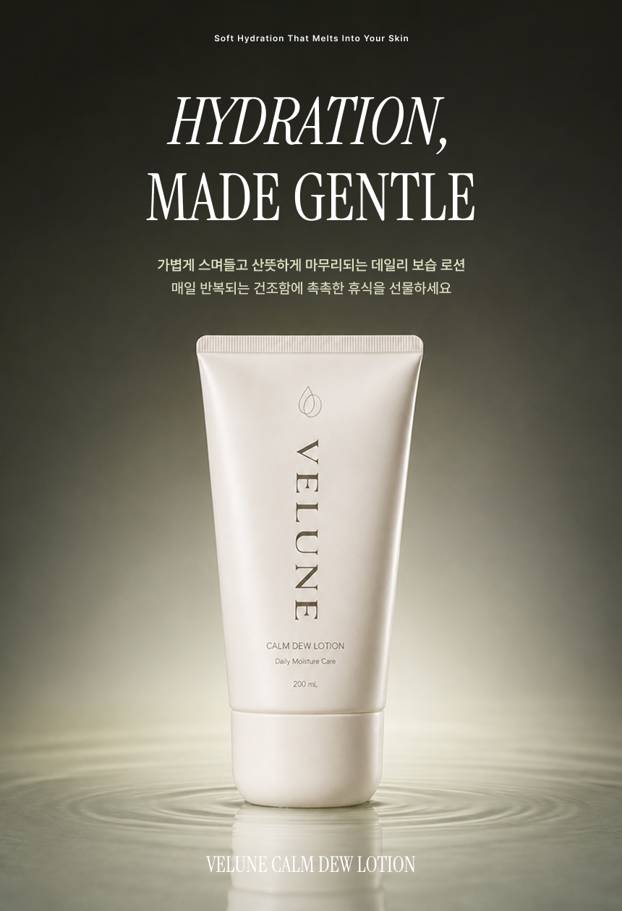
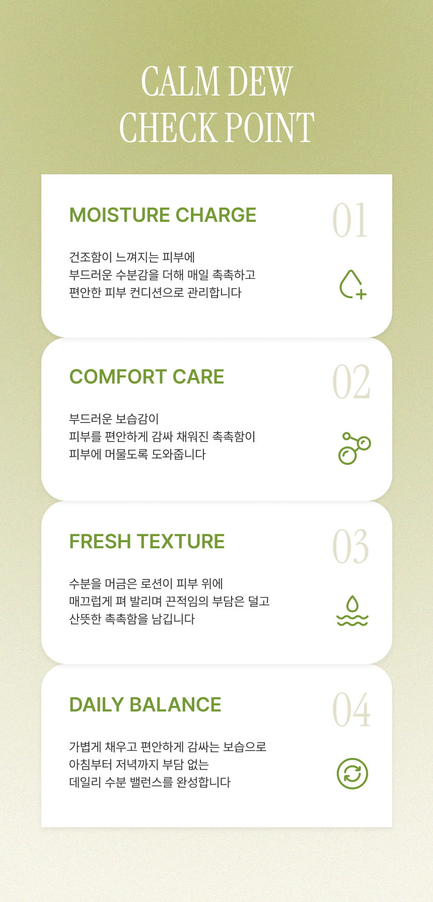
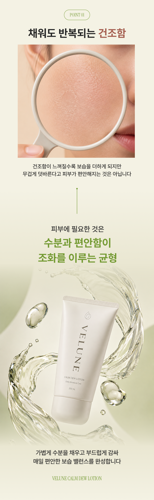
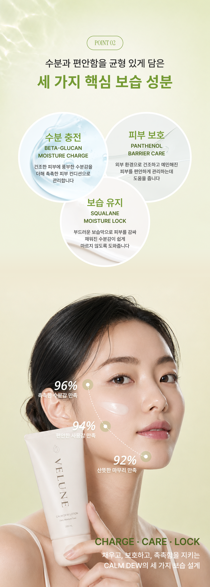
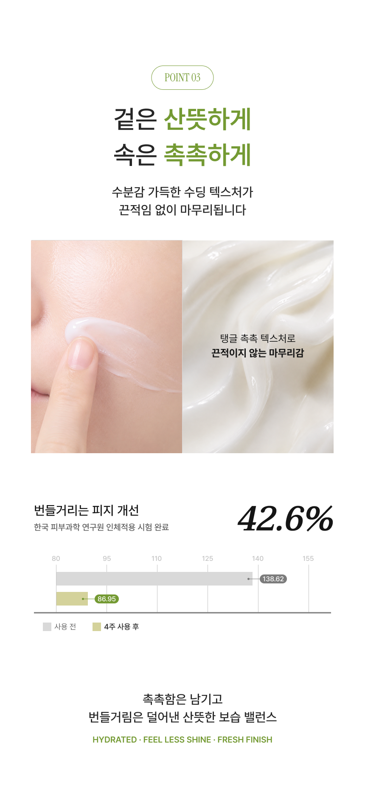
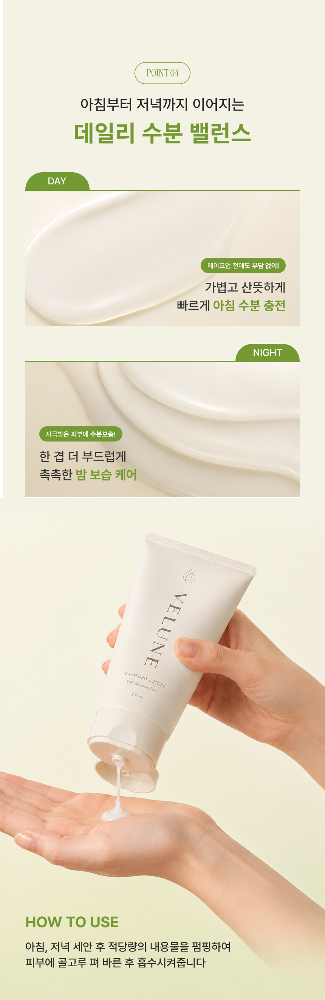
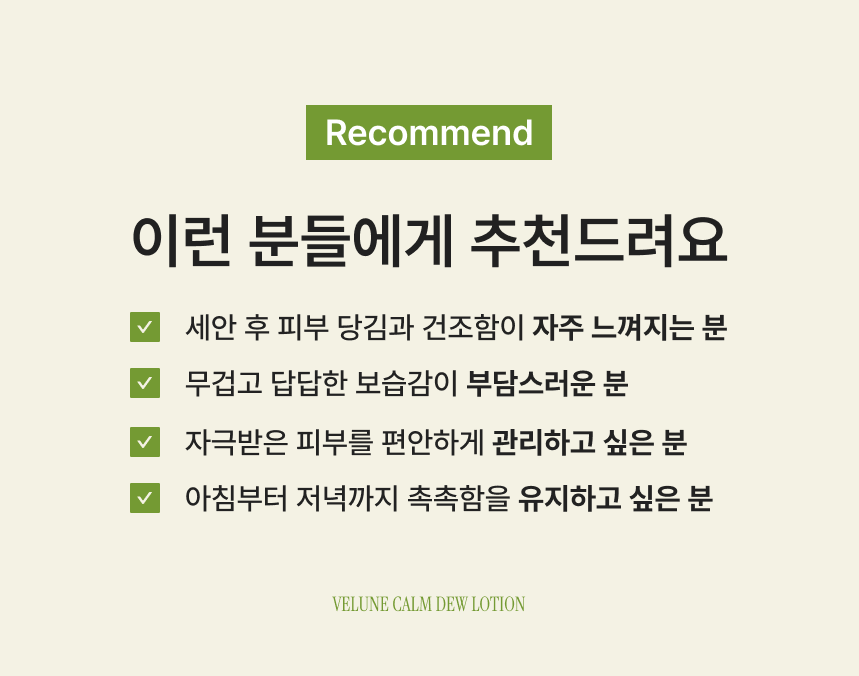

KIEHL'S
칼렌듈라 성분의 진정 효과를 따뜻한 감성으로 풀어낸 토너 상세페이지
Design Point
-
01
프로젝트 개요 및 기획 의도
카렌듈라 성분이 전하는 진정 효과를 보다 부드럽고 감성적으로 전달하기 위해 기존 제품 이미지를 새롭게 해석했습니다 민감해진 피부를 편안하게 돌보는 제품의 특징을 중심으로 전체 콘텐츠를 구성했습니다
-
02
성분과 효능의 직관적인 전달
카렌듈라를 비롯한 주요 진정 성분을 각각의 이미지와 함께 배치해 제품의 효능을 쉽게 이해할 수 있도록 했습니다 피부 고민부터 성분, 사용 효과, 루틴 제안까지 자연스럽게 이어지는 정보 흐름을 설계했습니다
-
03
자연스럽고 따뜻한 비주얼
웜 아이보리와 카렌듈라 오렌지를 중심으로 깨끗하면서도 생기 있는 분위기를 연출했습니다 꽃과 투명한 제형 이미지를 활용해 원료의 자연스러움을 강조하고, 여유 있는 레이아웃으로 편안한 브랜드 무드를 표현했습니다






